Securbot
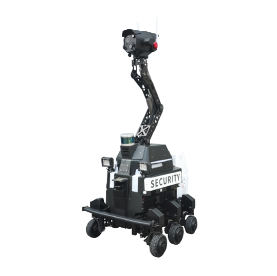
嚴選機械人硬體規格，BottiZ 提供在地化評估、部署與售後維護。

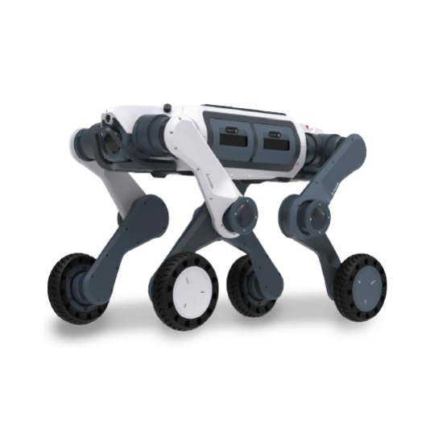
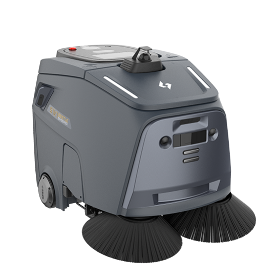
室內外工業級清潔機械人
工業級室內外清潔機械人，具備強大清潔能力與環境感知系統，可於光線不足或人流較多的環境中定位及避障，適合大面積公共設施、園區道路等場景自主作業。
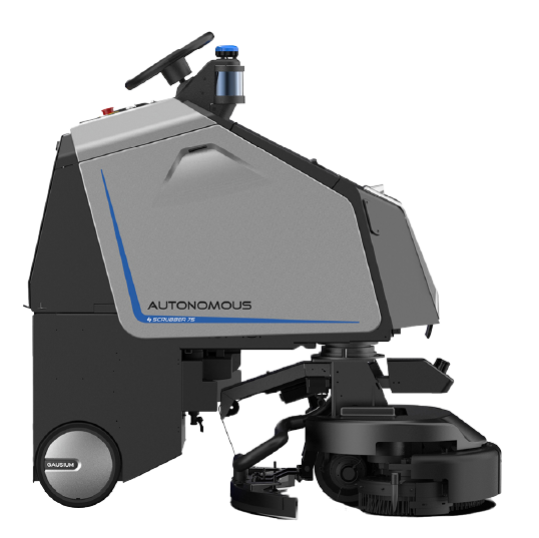
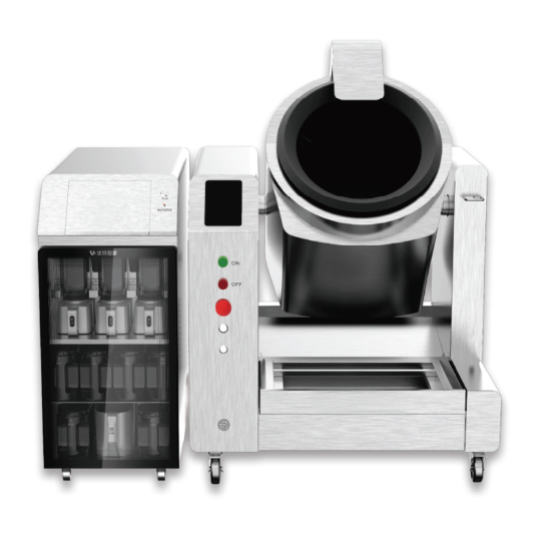
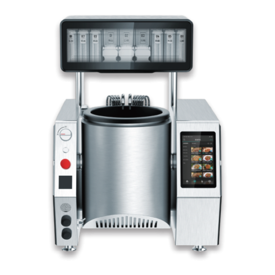
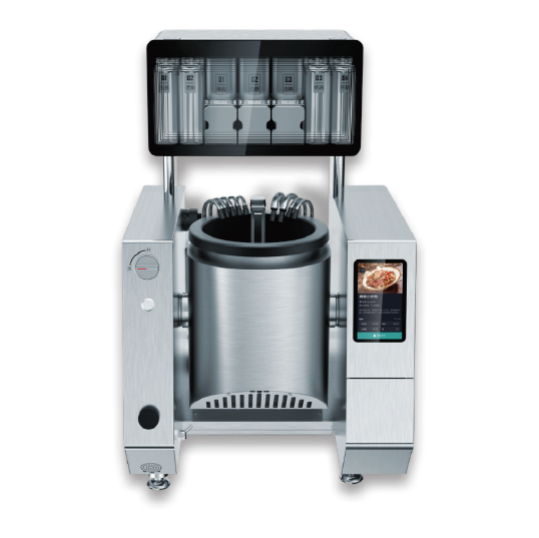
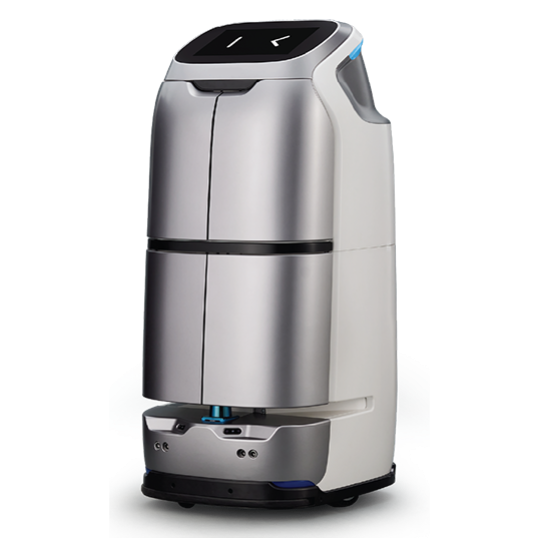
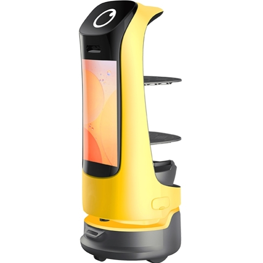
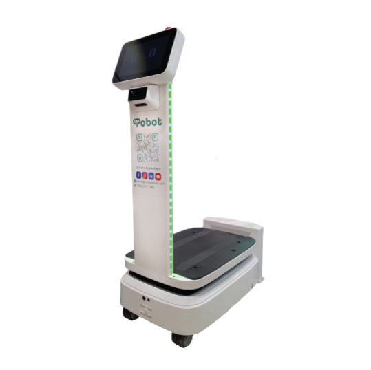

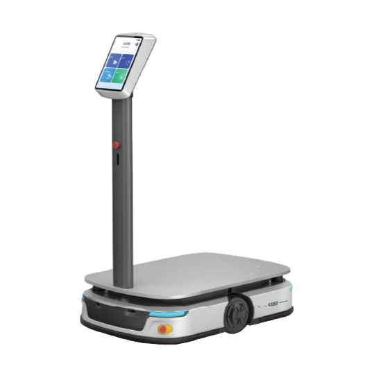
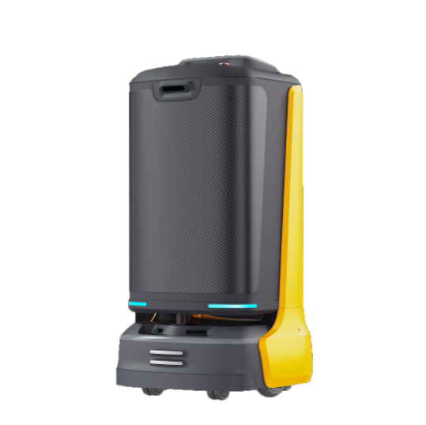
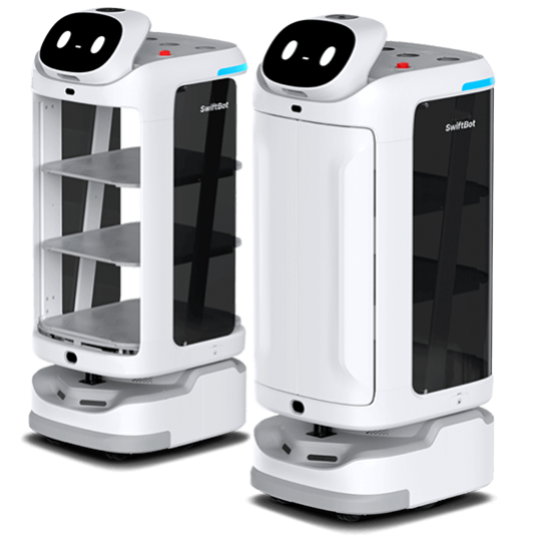
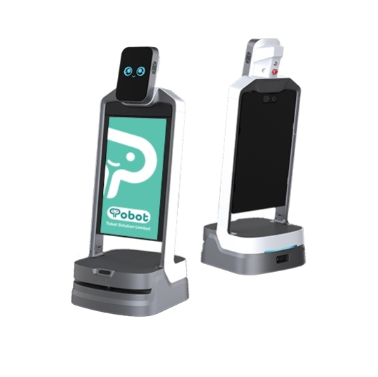
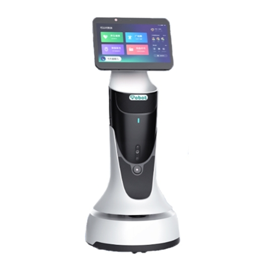
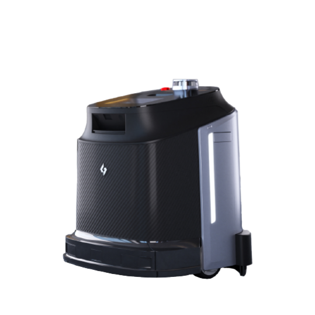
中小型設施清潔機械人
適用於中小型設施的智能清潔機械人，具備精準導航與高效清潔能力，機身小巧靈活，支援多合一地板清潔及零距離邊緣清潔，可應用於實驗室、特殊環境的清潔維護。
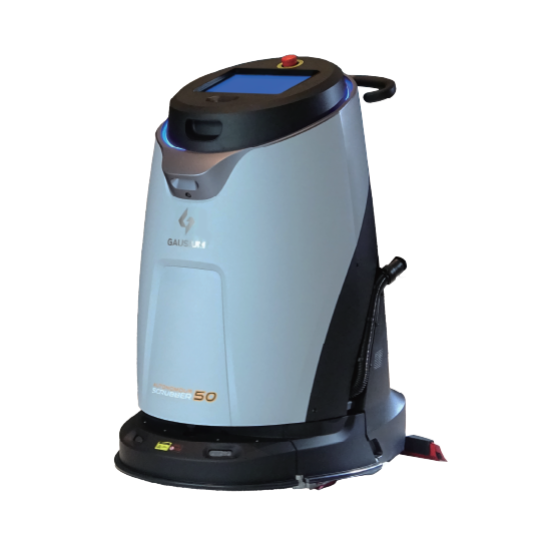
全自動清潔機械人
以全自動清潔及機械人隊伍管理減少人手操作，四合一清潔功能配合自動工作站，適合學校大堂、體育館、禮堂外及寬闊走廊等大中型校園空間。
告訴我們您的場景與需求，顧問團隊會建議合適的機型組合及部署方式。
為教育、商業、醫療及基礎設施提供清潔、配送、接待、教學及巡邏等全場景機械人整合方案。